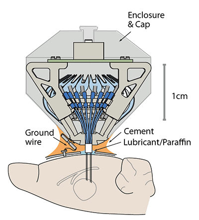

Implant protocol outline
This protocol outline serves only as suggestions for methods that we found to work well - all methods described here are subject to protocol approval at your institution.
(optional) Weigh the implant to document variations in the amount of epoxy used in constructing the drive.
Depending on the method used to connect the ground wire to the grounding site, verify that all connectors function properly. Some types of connectors such as mill-max pins have a lot of friction on first use.
Prior to implanting, electroplate the electrodes (see
Nguyen et al. 2009 for protocol), and document the electrode impedances.
Make sure that all electrodes are at well defined depths at the time of implant, so that the electrode position can be precisely reconstructed later.
Fill the guide tubes with silicone or mineral oil to inhibit CSF or blood from entering the guide tubes. Take care not to coat any other part of the drive with oil in order to ensure proper cement attachment during the surgery. Repeat this step just before implanting the drive, so the guide tubes are filled all the way to the bottom.

Perform the implant surgery according to your protocol and the guidelines of your institution. We find that performing complete durotomies minimizes brain deformation and yields better recordings at small electrode pitches.
During surgery, fill the space between the guide tube array and the brain with compatible surgical lubricant or mineral oil/paraffin according to the surgical protocol.
Attach the drive to the skull using dental cement, skull screws and/or adhesives according to your protocol. Make sure that no adhesive gets under the guide tube array.
Electrodes can be lowered as soon as the animal has recovered from surgery. Delaying the
onset of the lowering for more than ~5 days post surgery increases the risk that dura and
bone regrowth interferes with the electrodes.